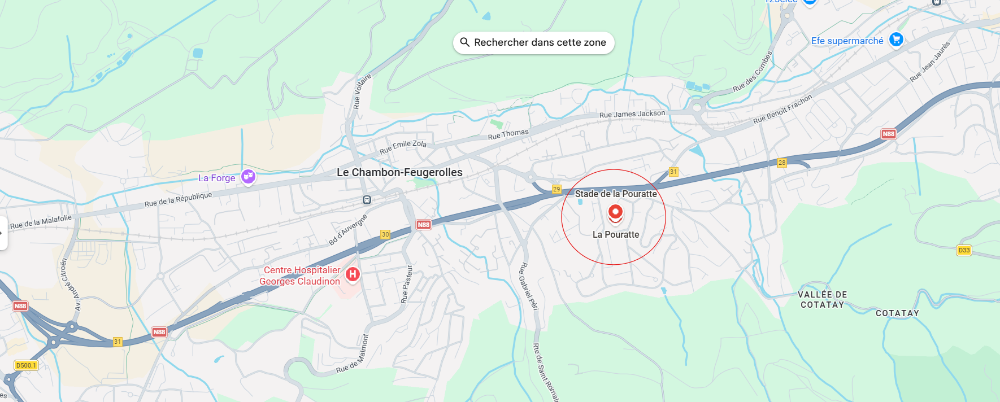

Infos pratiques
Dates et horaires
- Dimanche 26 avril 2026
- Retrait des dossards : à partir de 7:30
- Briefing sécurité : à préciser
- Départs : 21 km 09:00, 15,5 km 09:30, 7,5 km 10:00
- Limite de 500 dossards
Lieu départ / arrivée
Salle de la Pourratte, Chambon-Feugerolles 42500.

- Parking : à préciser
- Accès transports : à préciser
- Consignes : à préciser
Matériel conseillé
- Chaussures de trail adaptées au terrain
- Réserve d’eau (flasque, gourde ou poche)
- Coupe-vent léger selon météo
- Gel/barre si besoin (surtout 15,5 km et 21 km)
- Téléphone chargé
Règlement
Document officiel
Règlement du Kiné Trail du Pilat 2026
Consultez l’ensemble des règles de participation, de sécurité, de matériel et de responsabilité de l’événement.
Contact et équipe organisatrice
- Email : bde.aemks.sainte@gmail.com
- Organisateurs : BDE Le Kommando
- Ecole : IFMK Saint Michel